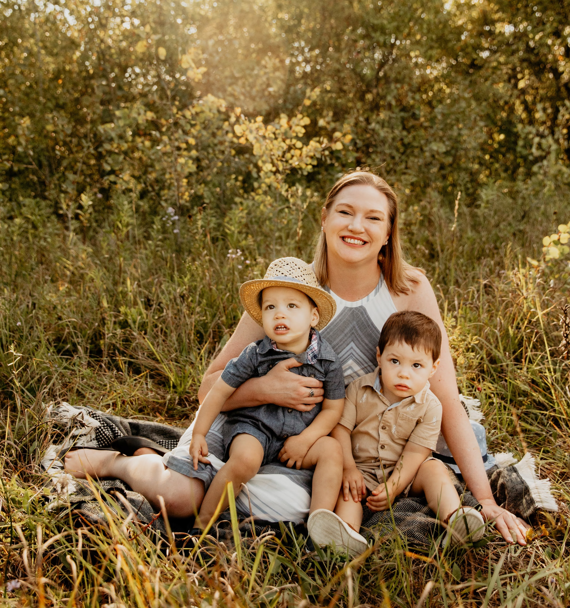

Hi! I'm
Danielle
Clifford
I'm a UX Designer and Illustrator
based in Minneapolis, MN

About Me
Over the last few years I have been working on developing my
graphic design chops and made a huge leap in that learning through
the University of Minnesota's UX/UI Design Certificate Program. I
recently graduated from this program and this fast-paced class
with a hands-on learning environment had industry professionals
working with students to teach us the tricks of the trade. I worked
regularly on all of the pieces of a user-centered design process
throughout this class.
Previous experience working in a Clinical Research Laboratory
helps me with my work as a UX designer and researcher by being
highly organized and motivated to learn from failures and be
humble enough to put that knowledge into practice.
When I'm not honing my UX design skills, I am a mom of twin three
year olds, a muralist, and I'm always drinking all the beverages.